Chapter 3 Quality Control (QC)
The next step in the DESeq2 workflow is QC, which includes sample-level and gene-level steps to perform QC checks on the count data to help us ensure that the samples/replicates look good.
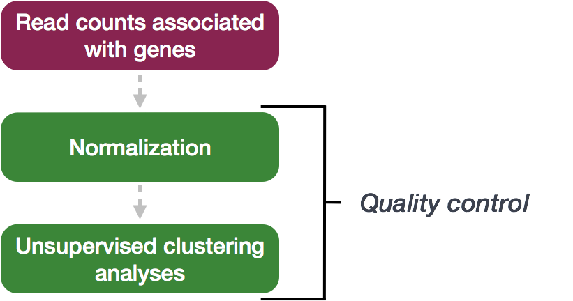
3.1 Sample-level QC
A useful initial step in an RNA-seq analysis is often to assess overall similarity between samples:
- Which samples are similar to each other, which are different?
- Does this fit to the expectation from the experiment’s design?
- What are the major sources of variation in the dataset?
To explore the similarity of our samples, we will be performing sample-level QC using Principal Component Analysis (PCA) and hierarchical clustering methods. Our sample-level QC allows us to see how well our replicates cluster together, as well as, observe whether our experimental condition represents the major source of variation in the data. Performing sample-level QC can also identify any sample outliers, which may need to be explored further to determine whether they need to be removed prior to DE analysis.
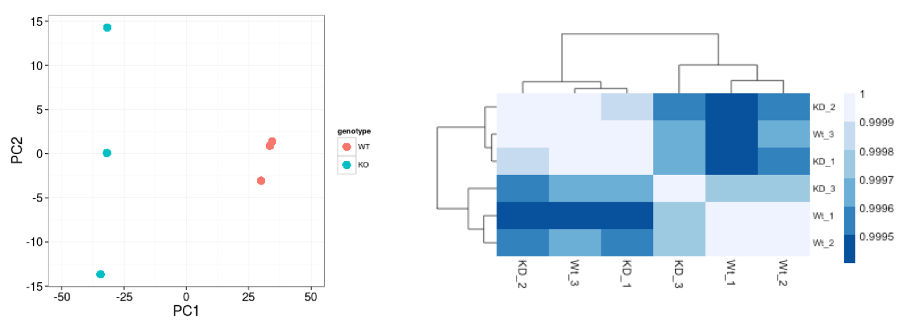
When using these unsupervised clustering methods, DESeq2 uses a regularized log transform (rlog) of the normalized counts for sample-level QC as it moderates the variance across the mean, improving the clustering.
What it does: - Converts counts to log2 scale (makes highly and lowly expressed genes more comparable)
Stabilizes variance across expression levels (prevents highly variable genes from dominating)
Results in data where all genes contribute more equally to PCA and clustering
Why this matters: Without transformation, highly expressed genes would dominate the PCA and clustering simply because they have larger count values, masking biologically meaningful patterns from other genes.
When to use it: Use rlog-transformed data for sample-level quality control like PCA plots, heatmaps, and sample clustering. Don’t use it for differential expression analysis - that uses the original count data.
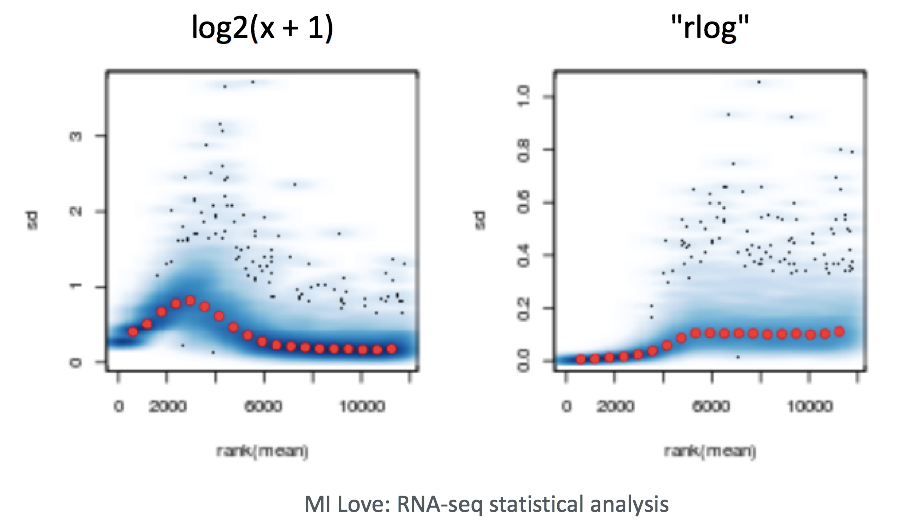
3.1.1 Principal Component Analysis
Principal Component Analysis (PCA) is a technique used to emphasize variation and bring out strong patterns in a dataset (dimensionality reduction). Details regarding PCA are given below (based on materials from StatQuest, and if you would like a more thorough description, we encourage you to explore StatQuest’s video.
Suppose we had a dataset with two samples and four genes. Based on this expression data we want to evaluate the relationship between these samples. We could plot the counts of one sample versus another, with Sample 1 on the x-axis and Sample 2 on the y-axis as shown below:
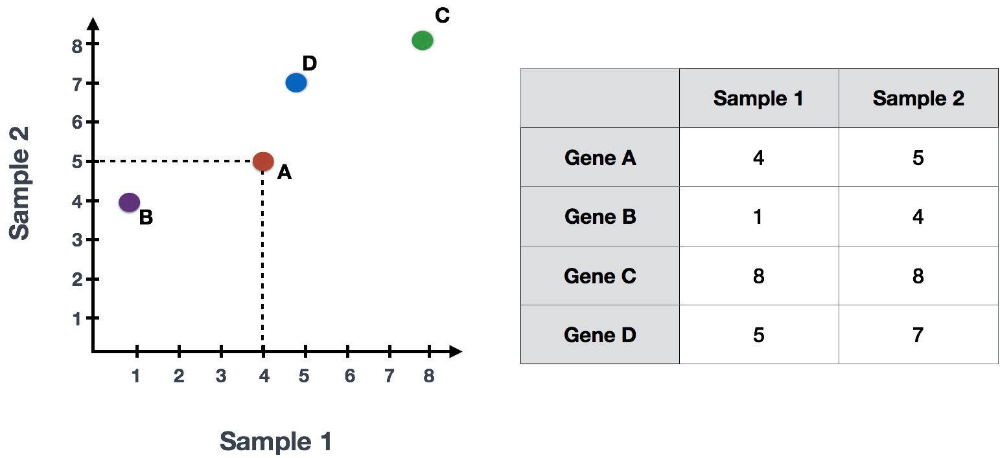
For PCA analysis, the first step is finding the first principal component (PC1), the direction through your data that shows the most variation. In this example, the most variation is along the diagonal - that’s where the data is most spread out – capturing the longest possible distance through this set of data points. The genes at the ends of this line (Gene B and Gene C) contribute most to the variability because they have the largest range of expression values across the samples.
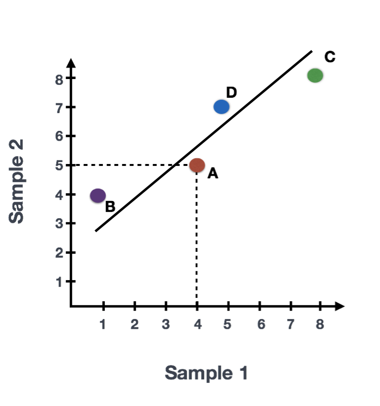
After drawing this line and establishing the amount of contribution per gene, PCA will compute a per sample score. The per sample PC1 score is computed by taking the product of each gene’s loading (its contribution to PC1) and its normalized expression in the sample, summed across all genes. We could draw another line through the data representing the second most amount of variation in the data (PC2) and compute scores, followed by a third line and so on until you hit the total number of samples in your dataset.
The formula to calculate a sample’s PC1 score is as follows:
\[ \text{Sample1 PC1 score} = (\text{expr}_{\text{GeneA}} \times \text{loading}_{\text{GeneA}}) + (\text{expr}_{\text{GeneB}} \times \text{loading}_{\text{GeneB}}) + \ldots + (\text{expr}_{\text{GeneN}} \times \text{loading}_{\text{GeneN}}) \]
More compact notation: \[\text{PC1}_j = \sum_{i=1}^{n} x_{ij} \cdot w_{i1}\]
Where:
\(\text{PC1}_j\) is the PC1 score for sample j
\(x_{ij}\) is the normalized expression value of gene i in sample j
\(w_{i1}\) is the PC1 loading (weight) for gene i
\(n\) = the total number of genes in the dataset
\(i\) = index for genes (goes from 1 to n)
\(j\) = index for samples
In reality, your dataset will have larger dimensions (more samples, and many, many more genes). The initial sample-to-sample plot, will therefore be in n-dimensional space with n axes representing the total number of samples you have. The end result is a 2-dimensional matrix with rows representing samples and columns reflecting scores for each of the principal components. To evaluate the results of a PCA, we usually plot principal components against each other, starting with PCs that explain the most amount of variation in your data.
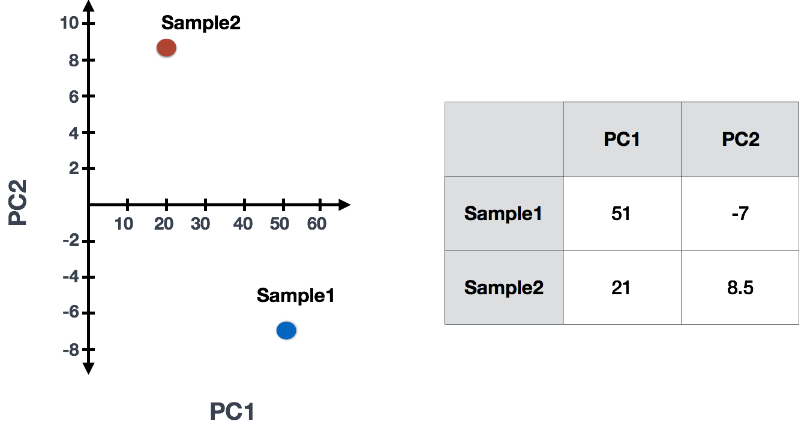
If two samples have similar levels of expression for the genes that contribute significantly to the variation represented by PC1, they will be plotted close together on the PC1 axis. Therefore, we would expect that biological replicates to have similar scores (since the same genes are changing) and cluster together on PC1 and/or PC2, and the samples from different treatment groups to have different scores.
3.1.1.1 Interpreting PCA plots
In real datasets with many samples and genes, PCA reduces the complex, high-dimensional data into a 2-dimensional space, where each sample is represented by its scores for the principal components. Typically, we plot the first two principal components (PC1 and PC2), as they explain the most variation in the data.
When interpreting PCA plots, biological replicates (samples from the same condition) should cluster together because they have similar expression patterns for the genes driving variation in PC1. Samples from different treatment groups will often separate along these axes, reflecting differences in their gene expression profiles.
This is best understood by looking at example PCA plots, where you can visualize how biological replicates cluster and treatment groups separate based on their gene expression patterns.
3.1.1.2 Interpreting PCA plots example
We have an example dataset and a few associated PCA plots below to get a feel for how to interpret them. The metadata for the experiment is displayed below. The main condition of interest is treatment.
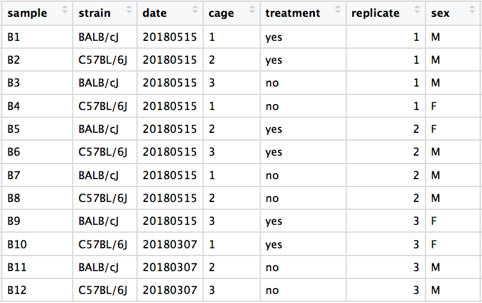
When visualizing on PC1 and PC2, we don’t see the samples separate by treatment, so we decide to explore other sources of variation present in the data. We hope that we have included all possible known sources of variation in our metadata table, and we can use these factors to color the PCA plot.

We begin by coloring the points in the PCA plot based on the cage factor, but this factor does not seem to explain the variation observed on PC1 or PC2.

Next, we color the points by the sex factor. Here, we observe that sex separates the samples along PC2, which is valuable information. We can use this in our model to account for variation due to sex and potentially regress it out to focus on other sources of variation.

Next we explore the strain factor and find that it explains the variation on PC1.
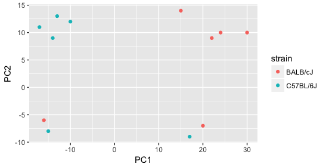
It’s great that we have been able to identify the sources of variation for both PC1 and PC2. By accounting for it in our model, we should be able to detect more genes differentially expressed due to treatment.
Worrisome about this plot is that we see two samples that do not cluster with the correct strain. This would indicate a likely sample swap and should be investigated to determine whether these samples are indeed the labeled strains. If we found there was a switch, we could swap the samples in the metadata. However, if we think they are labeled correctly or are unsure, we could just remove the samples from the dataset.
Still we haven’t found if treatment is a major source of variation after strain and sex. So, we explore PC3 and PC4 to see if treatment is driving the variation represented by either of these PCs.
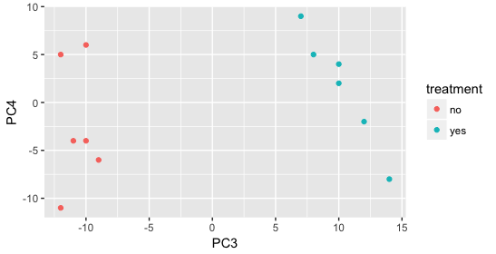
We find that the samples separate by treatment on PC3, and are optimistic about our DE analysis since our condition of interest, treatment, is separating on PC3 and we can regress out the variation driving PC1 and PC2.
- Design formula:
-
strain + sex + treatment:
Gene Expression = β₀ + β₁(strain) + β₂(sex) + β₃(treatment) + ε
DESeq2 estimates separate coefficients (β₁, β₂, β₃) for each factor, then tests specifically for β₃ (treatment effect).
Key Point: You’re not making strain/sex disappear - you’re statistically controlling for them so you can get a cleaner estimate of the treatment effect.
Exercise points = +3
Now let’s practice interpreting a PCA plot. In a typical RNA-seq experiment, you’ll have multiple samples (different treatments, replicates, etc.) and thousands of genes. After PCA calculates the principal component scores, we plot the samples (not genes) in this new coordinate system.
Below is a practice dataset with 4 treatment groups (Control and 3 drugs) with 3 biological replicates each (12 samples total). Each point represents one sample, positioned based on its PC1 and PC2 scores.
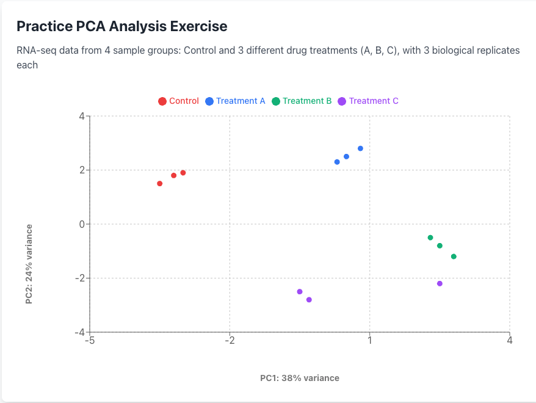
Analysis Questions1. What are the main sources of variation in this dataset (PC1 and PC2)?
2: Do the sample groups and replicates cluster appropriately?
3. What concerns should be addressed before proceeding with analysis?
3.1.2 Hierarchical Clustering Heatmap
Similar to PCA, hierarchical clustering is another, complementary method for identifying strong patterns in a dataset and potential outliers. The heatmap displays the correlation of gene expression for all pairwise combinations of samples in the dataset. Since the majority of genes are not differentially expressed, samples generally have high correlations with each other (values higher than 0.80). Samples below 0.80 may indicate an outlier in your data and/or sample contamination.
The hierarchical tree can indicate which samples are more similar to each other based on the normalized gene expression values. The color blocks indicate substructure in the data, and you would expect to see your replicates cluster together as a block for each sample group. Additionally, we expect to see samples clustered similar to the groupings observed in a PCA plot.
In the plot below, we would be quite concerned about ‘Wt_3’ and ‘KD_3’ samples not clustering with the other replicates. We would want to explore the PCA to see if we see the same clustering of samples.

3.2 Gene-level QC
Prior to differential expression analysis, it’s beneficial to remove genes that have little chance of being detected as differentially expressed (such as genes with very low counts across all samples). This filtering increases the power to detect truly differentially expressed genes. DESeq2 performs this filtering automatically, so we don’t need to do additional gene filtering steps for our analysis.
3.3 Mov10 quality assessment and exploratory analysis using DESeq2
Now that we have a good understanding of the QC steps normally employed for RNA-seq, let’s implement them for the Mov10 dataset we are going to be working with.
Transform normalized counts using the rlog transformation Before creating PCA plots and other visualizations, we need to transform our normalized counts using the regularized log transformation (rlog).
Why transform the data? Raw RNA-seq count data has a problem: genes with low expression show high variability (noise), while highly expressed genes show less variability. This means highly expressed genes would dominate any clustering or PCA analysis. The rlog transformation solves this by:
Converting counts to log2 scale (makes genes more comparable) Stabilizing variance across all expression levels (so all genes contribute more equally)
The result: Data that’s appropriate for visualization and quality control, where patterns reflect biological differences rather than technical noise from expression level differences.
3.3.1 Transform counts for data visualization
The blind=TRUE argument means the transformation doesn’t use sample group information, which is important for unbiased quality assessment.
Note: Use rlog-transformed data only for visualizations (PCA, heatmaps, clustering). For differential expression analysis, DESeq2 uses the original count data.
3.3.2 Principal components analysis (PCA)
DESeq2 has a built-in function for plotting PCA plots, that uses ggplot2 under the hood. This is great because it saves us having to type out lines of code and having to fiddle with the different ggplot2 layers. In addition, it takes the rlog object as an input directly, hence saving us the trouble of extracting the relevant information from it.
The function plotPCA() requires two arguments as input: an rlog object and the intgroup (the column in our metadata that we are interested in).
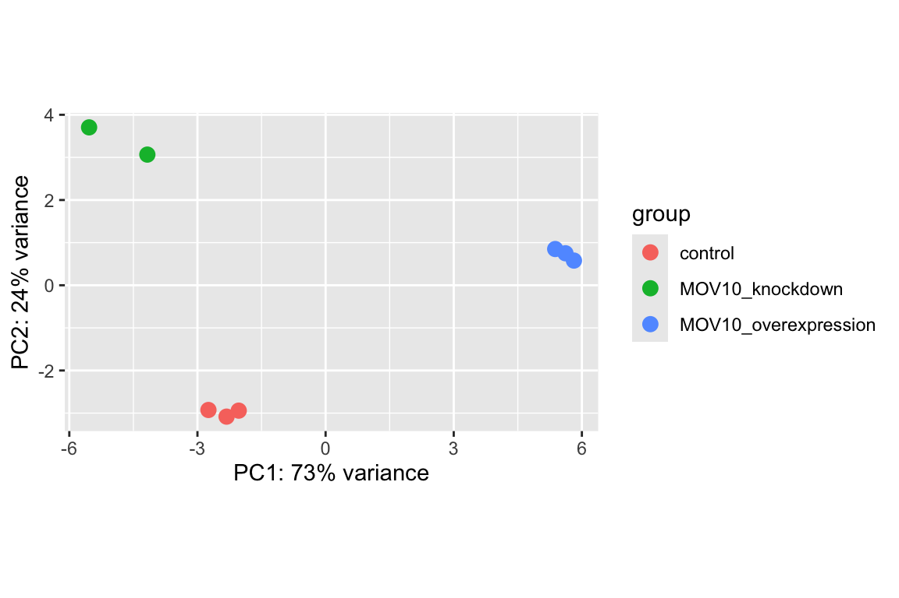
What does this plot tell you about the similarity of samples? Does it fit the expectation from the experimental design? By default the function uses the top 500 most variable genes. You can change this by adding the ntop argument and specifying how many genes you want to use to draw the plot.
3.3.3 Hierarchical Clustering
Since there is no built-in function for heatmaps in DESeq2 we will be using the pheatmap() function from the pheatmap package. This function requires a matrix/dataframe of numeric values as input, and so the first thing we need to is retrieve that information from the rld object:
### Extract the rlog matrix from the object
rld_mat <- assay(rld) ## assay() is function from the "SummarizedExperiment" package that was loaded when you loaded DESeq2Then we need to compute the pairwise correlation values for samples. We can do this using the cor() function:
### Compute pairwise correlation values
rld_cor <- cor(rld_mat) ## cor() is a base R function
head(rld_cor) ## check the output of cor(), make note of the rownames and colnames## Irrel_kd_1 Irrel_kd_2 Irrel_kd_3 Mov10_kd_2 Mov10_kd_3 Mov10_oe_1
## Irrel_kd_1 1.0000000 0.9999614 0.9999532 0.9997202 0.9997748 0.9996700
## Irrel_kd_2 0.9999614 1.0000000 0.9999544 0.9996918 0.9997568 0.9996984
## Irrel_kd_3 0.9999532 0.9999544 1.0000000 0.9996816 0.9997574 0.9997067
## Mov10_kd_2 0.9997202 0.9996918 0.9996816 1.0000000 0.9999492 0.9994868
## Mov10_kd_3 0.9997748 0.9997568 0.9997574 0.9999492 1.0000000 0.9996154
## Mov10_oe_1 0.9996700 0.9996984 0.9997067 0.9994868 0.9996154 1.0000000
## Mov10_oe_2 Mov10_oe_3
## Irrel_kd_1 0.9996599 0.9995804
## Irrel_kd_2 0.9996825 0.9996227
## Irrel_kd_3 0.9997090 0.9996026
## Mov10_kd_2 0.9994565 0.9993869
## Mov10_kd_3 0.9995905 0.9995235
## Mov10_oe_1 0.9999505 0.9999196And now to plot the correlation values as a heatmap:
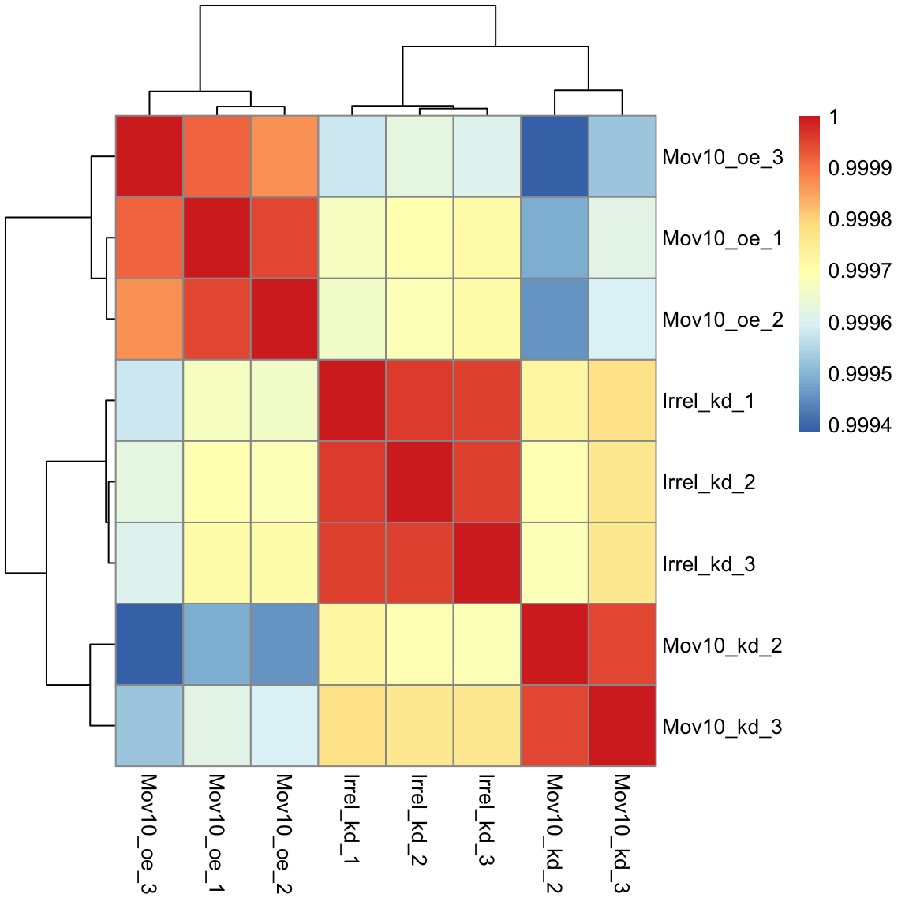
Overall, we observe pretty high correlations across the board ( > 0.999) suggesting no outlying sample(s). Also, similar to the PCA plot you see the samples clustering together by sample group. Together, these plots suggest to us that the data are of good quality and we have the green light to proceed to differential expression analysis.
Exercise points = +6
The pheatmap function has a number of different arguments that we can alter from default values to enhance the aesthetics of the plot. Add the arguments color, border_color, fontsize_row, fontsize_col, show_rownames and show_colnames to your pheatmap. How does your plot change (plot shown below)? Take a look through the help pages (?pheatmap) and identify what each of the added arguments is contributing to the plot.
The library RColorBrewer provides different palettes for plotting. We can display all of the palettes using:
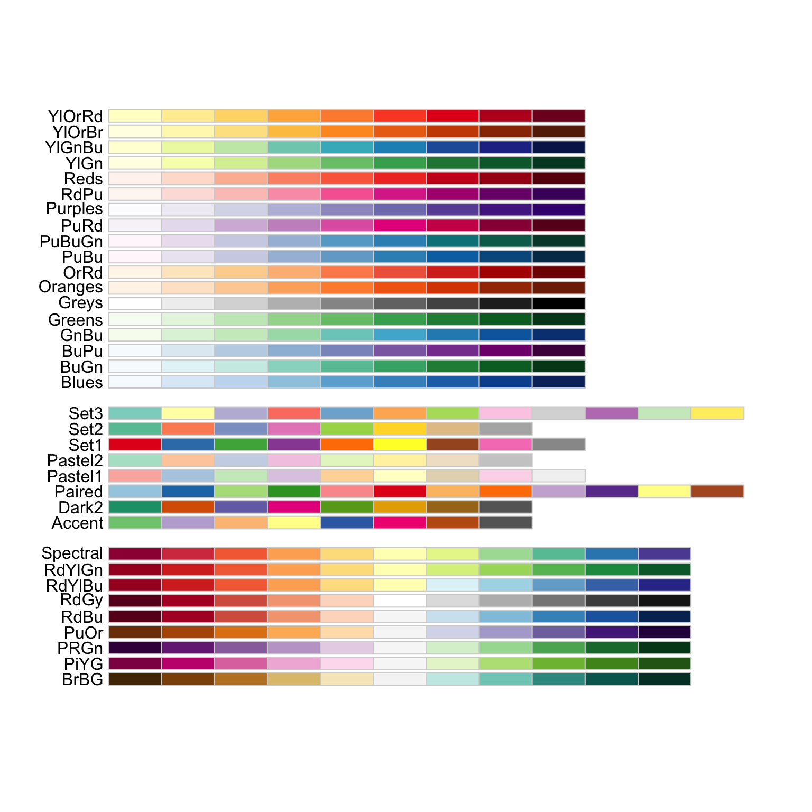
# The color palette "Blues" is a good choice for this heatmap
heat.colors <- brewer.pal(9, "Blues")
pheatmap(rld_cor,
color = heat.colors,
border_color = "black",
fontsize_row = 12,
fontsize_col = 10,
show_rownames = TRUE,
show_colnames = TRUE)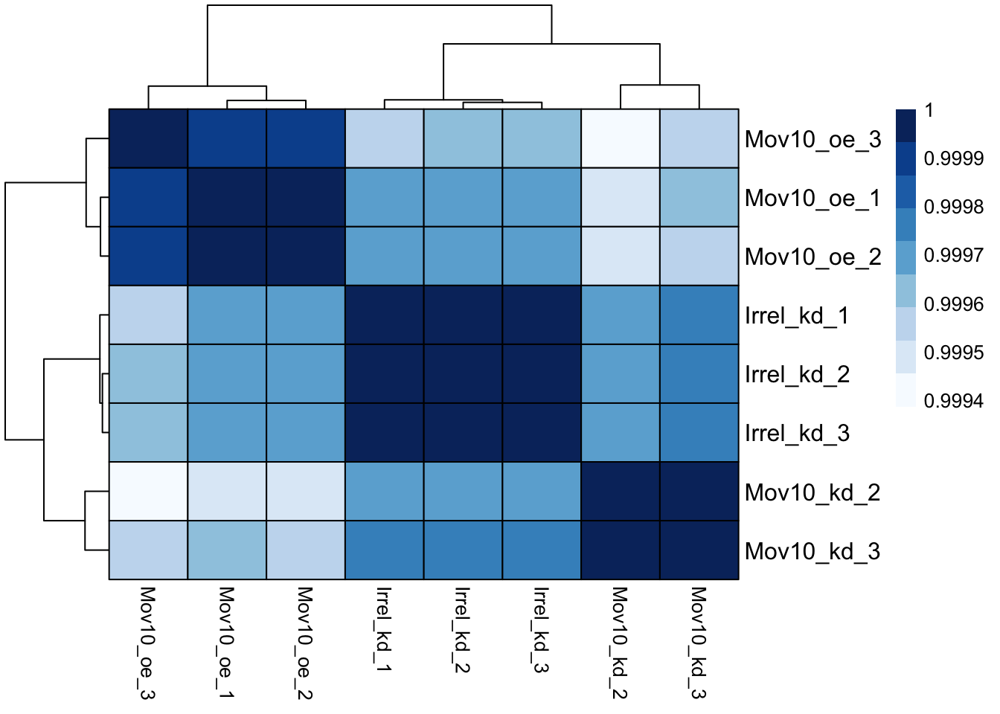
Identify what each of the added arguments is contributing to the plot.